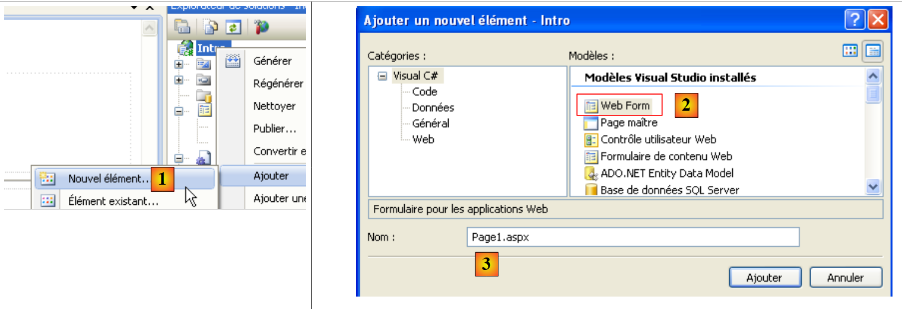
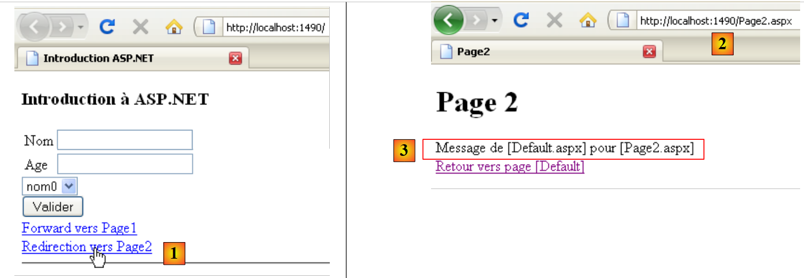

2. A Quick Introduction to ASP.NET
Here, we aim to introduce, using a few examples, the concepts of ASP.NET that will be useful to us later in this document. This introduction does not cover the intricacies of client/server communication in a web application. For that, you can read:
- ASP.NET Programming [Web Development with ASP.NET 1.1 (2004)]
This introduction is intended for those who want to get started quickly, accepting—at least initially—that some potentially important points may be left unexplained. The rest of the document explores these points in greater depth. Those familiar with ASP.NET can skip directly to paragraph 3.
2.1. A sample project
2.1.1. Creating the project
 |
- In [1], create a new project with Visual Web Developer
- In [2], select a Visual C# web project
- In [3], specify that you want to create a web application ASP.NET
- In [4], give the application a name. A folder will be created for the project with this name.
- In [5], specify the parent folder of the project's [4] folder
 |
- In [6], the project is created
- [Default.aspx] is a default web page. It contains HTML tags and ASP.NET tags
- [Default.aspx.cs] contains the code for handling user-triggered events on the [Defaul.aspx] page displayed in the user’s browser
- [Default.aspx.designer.cs] contains the list of ASP.NET components on the [Default.aspx] page. Each ASP.NET component placed on the [Default.aspx] page generates a declaration for that component in [Default.aspx.designer.cs].
- [Web.config] is the configuration file for the ASP.NET project.
- [References] is the list of DLL files used by the web project. These DLL files are class libraries that the project will use. In [7], the list of DLL files set as defaults in the project references. Most of them are unnecessary. If the project needs to use a DLL not listed in [7], it can be added via [8].
2.1.2. The [Default.aspx] page
If the project is run via [Ctrl-F5], the [Default.aspx] page is displayed in a browser:
 |
- in [1], the URL page of the web project. Visual Web Developer has a built-in web server that launches when a project is requested to run. It listens on a random port, in this case 1490. The listening port is usually port 80. In [1], no page is requested. In this case, the [Default.aspx] page is displayed, hence its name as the default page.
- In [2], the page [Default.aspx] is empty.
- In Visual Web Developer, the page [Default.aspx] [3] can be built visually ([Design] tab) or using tags ([Source] tab)
- In [4], the [Defaul.aspx] page is in [Design] mode. It is built by dragging and dropping components found in the [5] toolbox.
 |
The [Source] [6] mode provides access to the page's source code:
<%@ Page Language="C#" AutoEventWireup="true" CodeBehind="Default.aspx.cs" Inherits="Intro._Default" %>
<!DOCTYPE html PUBLIC "-//W3C//DTD XHTML 1.0 Transitional//EN" "http://www.w3.org/TR/xhtml1/DTD/xhtml1-transitional.dtd">
<html xmlns="http://www.w3.org/1999/xhtml">
<head runat="server">
<title></title>
</head>
<body>
<form id="form1" runat="server">
<div>
</div>
</form>
</body>
</html>
- Line 1 is a ASP.NET directive that lists certain properties of the page
- The Page directive applies to a web page. There are other directives such as Application, WebService, ... that apply to other objects ASP.NET
- The CodeBehind attribute specifies the file that handles the page's events
- The Language attribute specifies the .NET language used by the CodeBehind file
- The Inherits attribute specifies the name of the class defined within the CodeBehind file
- The attribute AutoEventWireUp="true" indicates that the binding between an event in [Default.aspx] and its handler in [Defaul.aspx.cs] is based on the event name. Thus, the Load event on the [Default.aspx] page will be handled by the Page_Load method of the Intro._Default class defined by the Inherits attribute.
- Lines 4–14 describe the [Defaul.aspx] page using standard HTML tags:
- HTML standard tags such as the <body> or <div>
- ASP.NET. These are the tags that have the runat="server" attribute. The ASP.NET tags are processed by the web server before the page is sent to the client. They are converted into HTML tags. The client browser therefore receives a standard HTML page in which there are no longer any ASP.NET tags.
The [Default.aspx] page can be modified directly from its source code. This is sometimes simpler than going through the [Design] mode. We modify the source code as follows:
<%@ Page Language="C#" AutoEventWireup="true" CodeBehind="Default.aspx.cs" Inherits="Intro._Default" %>
<!DOCTYPE html PUBLIC "-//W3C//DTD XHTML 1.0 Transitional//EN" "http://www.w3.org/TR/xhtml1/DTD/xhtml1-transitional.dtd">
<html xmlns="http://www.w3.org/1999/xhtml">
<head runat="server">
<title>Introduction ASP.NET</title>
</head>
<body>
<h3>Introduction à ASP.NET</h3>
<form id="form1" runat="server">
<div>
</div>
</form>
</body>
</html>
On line 6, we give the page a title using the <HTML> tag. On line 9, we insert text into the body (<body>) of the page. If we run the project (Ctrl-F5), we get the following result in the browser:
 |
2.1.3. The files [Default.aspx.designer.cs] and [Default.aspx.cs]
The file [Default.aspx.designer.cs] declares the components of the page [Defaul.aspx]:
//------------------------------------------------------------------------------
// <auto-generated>
// This code was generated by a tool.
// Version runtime :2.0.50727.3603
//
// Changes made to this file may cause incorrect behavior and will be lost if
// the code is regenerated.
// </auto-generated>
//------------------------------------------------------------------------------
namespace Intro {
public partial class _Default {
/// <summary>
/// Control form1.
/// </summary>
/// <remarks>
/// Automatically generated field.
/// To modify, move the field declaration from the designer file to the code-behind file.
/// </remarks>
protected global::System.Web.UI.HtmlControls.HtmlForm form1;
}
}
This file contains a list of ASP.NET components from the [Default.aspx] page that have an identifier. They correspond to the tags in [Default.aspx] that have the runat="server" attribute and the id attribute. Thus, the component on line 23 above corresponds to the tag
<form id="form1" runat="server">
tag in [Default.aspx].
The developer interacts little with the file [Default.aspx.designer.cs]. Nevertheless, this file is useful for determining the class of a particular component. Thus, we see below that the form1 component is of type HtmlForm. The developer can then explore this class to learn about its properties and methods. The components of the [Default.aspx] page are used by the class in the [Default.aspx.cs] file:
using System;
using System.Collections.Generic;
using System.Linq;
using System.Web;
using System.Web.UI;
using System.Web.UI.WebControls;
namespace Intro
{
public partial class _Default : System.Web.UI.Page
{
protected void Page_Load(object sender, EventArgs e)
{
}
}
}
Note that the class defined in the files [Default.aspx.cs] and [Default.aspx.designer.cs] is the same (line 10): Intro._Default. It is the partial keyword that makes it possible to extend a class declaration across multiple files, in this case two.
In line 10 above, we see that the class [_Default] extends the class [Page] and inherits its events. One of these is the Load event, which occurs when the page is loaded by the web server. Line 12: the Page_Load method handles the page’s Load event. This is typically where the page is initialized before being displayed in the client’s browser. Here, the Page_Load method does nothing.
The class associated with a web page—in this case, the Intro._Default class—is created at the start of the client request and destroyed once the response has been sent to the client. It cannot therefore be used to store information between requests. To do this, you must use the concept of a user session.
2.2. Events of a web page ASP.NET
We build the following [Default.aspx] page:
<%@ Page Language="C#" AutoEventWireup="true" CodeBehind="Default.aspx.cs" Inherits="Intro._Default" %>
<!DOCTYPE html PUBLIC "-//W3C//DTD XHTML 1.0 Transitional//EN" "http://www.w3.org/TR/xhtml1/DTD/xhtml1-transitional.dtd">
<html xmlns="http://www.w3.org/1999/xhtml">
<head runat="server">
<title>Introduction ASP.NET</title>
</head>
<body>
<h3>Introduction à ASP.NET</h3>
<form id="form1" runat="server">
<div>
<table>
<tr>
<td>
Nom</td>
<td>
<asp:TextBox ID="TextBoxNom" runat="server"></asp:TextBox>
</td>
<td>
</td>
</tr>
<tr>
<td>
Age</td>
<td>
<asp:TextBox ID="TextBoxAge" runat="server"></asp:TextBox>
</td>
<td>
</td>
</tr>
</table>
</div>
<asp:Button ID="ButtonValider" runat="server" Text="Valider" />
<hr />
<p>
Evénements traités par le serveur</p>
<p>
<asp:ListBox ID="ListBoxEvts" runat="server"></asp:ListBox>
</p>
</form>
</body>
</html>
The [Design] mode for the page is as follows:
 |
The [Default.aspx.designer.cs] file is as follows:
namespace Intro {
public partial class _Default {
protected global::System.Web.UI.HtmlControls.HtmlForm form1;
protected global::System.Web.UI.WebControls.TextBox TextBoxNom;
protected global::System.Web.UI.WebControls.TextBox TextBoxAge;
protected global::System.Web.UI.WebControls.Button ButtonValider;
protected global::System.Web.UI.WebControls.ListBox ListBoxEvts;
}
}
This file contains all ASP.NET components from the [Default.aspx] page that have an ID.
We update the [Default.aspx.cs] file as follows:
using System;
namespace Intro
{
public partial class _Default : System.Web.UI.Page
{
protected void Page_Init(object sender, EventArgs e)
{
// the event
ListBoxEvts.Items.Insert(0, string.Format("{0}: Page_Init", DateTime.Now.ToString("hh:mm:ss")));
}
protected void Page_Load(object sender, EventArgs e)
{
// the event
ListBoxEvts.Items.Insert(0, string.Format("{0}: Page_Load", DateTime.Now.ToString("hh:mm:ss")));
}
protected void ButtonValider_Click(object sender, EventArgs e)
{
// the event
ListBoxEvts.Items.Insert(0, string.Format("{0}: ButtonValider_Click", DateTime.Now.ToString("hh:mm:ss")));
}
}
}
The [_Default] class (line 5) handles three events:
- the Init event (line 7), which occurs when the page has been initialized
- the Load event (line 13), which occurs when the page has been loaded by the web server. The Init event occurs before the Load event.
- the Click event on the ButtonValider button (line 19), which occurs when the user clicks the [Valider] button
Handling each of these three events involves adding a message to the Listbox component named ListBoxEvts. This message displays the time and name of the event. Each message is placed at the top of the list. Therefore, the messages at the top of the list are the most recent.
When the project is run, the following page is displayed:
 |
In [1], we can see that the events Page_Init and Page_Load occurred in that order. Recall that the most recent event is at the top of the list. When the browser requests the page [Default.aspx] directly via its Url [2], it does so using a HTTP (HyperText Transfer Protocol) called GET. Once the page is loaded in the browser, the user will trigger events on the page. For example, they will click the [Valider] [3] button. The events triggered by the user once the page has loaded in the browser trigger a request to the page [Default.aspx], but this time with a command HTTP called POST. To summarize:
- the initial loading of a page P in a browser is performed by an operation HTTP GET
- The events that occur next on the page generate a new request to the same page P each time, but this time with the command HTTP POST. A page P can determine whether it was requested with a command GET or a command POST, allowing it to behave differently if necessary, which is usually the case.
Initial request for a page ASPX: GET
 |
- to [1], the browser requests the page ASPX via a command HTTP GET without parameters.
- In [2], the web server sends the stream HTML—a translation of the requested page ASPX—in response.
Processing an event triggered on the page displayed by the browser: POST
 |
- in [1], during an event on the page HTML, the browser requests the page ASPX, which has already been retrieved via an operation GET, this time with a command HTTP POST accompanied by parameters. These parameters are the values of the components located within the <form> tag of the HTML page displayed by the browser. These values are referred to as the values posted by the client. They will be used by the ASPX page to process the client’s request.
- In [2], the web server sends the HTML stream in response—a translation of the ASPX page initially requested by POST, or of another page if there was a page transfer or page redirection.
Let’s return to our example page:
 |
- in [2], the page was obtained via a GET.
- In [1], we see the two events that occurred during this GET
If, above, the user clicks the [Valider] [3] button, the [Default.aspx] page will be requested with a POST. This POST will be accompanied by parameters that are the values of all components included in the <form> tag of the [Default.aspx] page: the two TextBox and [TextBoxNom, TextBoxAge], the [ButtonValider] button, and the [ListBoxEvts] list. The values posted for the components are as follows:
- TextBox: the entered value
- Button: the button text, in this case "Validate"
- Listbox: the text of the message selected in ListBox
In response to POST, we get the page [4]. It is again the page [Default.aspx]. This is normal behavior, unless there is a page transfer or redirection by the page’s event handlers. We can see that two new events have occurred:
- the Page_Load event, which occurred when the page loaded
- the ButtonValider_Click event, which occurred when the [Valider] button was clicked
Note that:
- the Page_Init event did not occur during the HTTP POST operation, whereasit did occur on the HTTP GET event
- The event Page_Load occurs every time, whether on a GET or a POST. It is in this method that we generally need to know whether we are dealing with a GET or a POST.
- After the POST, the [Default.aspx] page was sent back to the client with the changes made by the event handlers. It’s always like this. Once the events for a page P have been processed, that same page P is sent back to the client. There are two ways to break this rule. The last event handler executed can
- transfer the execution flow to another P2 page.
- redirect the client browser to another P2 page.
In both cases, it is page P2 that is sent back to the browser. The two methods have differences that we will discuss later.
- The event ButtonValider_Click occurred after the event Page_Load. Therefore, it is this handler that can decide whether to transfer or redirect to a page P2.
- The list of events [4] retained the two events displayed during the initial loading GET of the page [Default.aspx]. This is surprising given that the page [Default.aspx] was recreated during POST. We should find the page [Default.aspx] with its design values, and therefore an empty ListBox. The execution of the Page_Load and ButtonValider_Click handlers should then place two messages there. However, there are four. This is explained by the mechanism of VIEWSTATE. During the initial GET, the web server sends the [Default.aspx] page with a HTML tag <input type="hidden" ...> called a hidden field (line 10 below).
In the "id" field, the web server encodes the values of all the page components. It does this for both the initial GET and the subsequent POST. When a POST occurs on a page P:
- the browser requests page P by sending the values of all components inside the <form> tag in its request. Above, we can see that the component "__VIEWSTATE" is inside the <form> tag. Its value is therefore sent to the server during a POST.
- Page P is instantiated and initialized with its construction values
- The "__VIEWSTATE" component is used to restore the values that the components had when page P was previously sent. This is how, for example, the list of events [4] retrieves the first two messages it had when it was sent in response to the browser’s initial GET.
- The components of page P then take on the values posted by the browser. At this point, the form on page P is in the state in which the user posted it.
- The Page_Load event is processed. Here, it adds a message to the list of [4] events.
- The event that triggered POST is processed. Here, ButtonValider_Click adds a message to the list of events [4].
- Page P is returned. The components have the following values:
- either the posted value, c.a.d. the value the component had in the form when it was posted to the server
- or a value provided by one of the event handlers.
In our example,
- both components TextBox will retain their posted values because the event handlers do not modify them
- the list of events [4] retains its posted value, c.a.d. all events already in the list, plus two new events created by the methods Page_Load and ButtonValider_Click.
The VIEWSTATE mechanism can be enabled or disabled at the component level. Let’s disable it for the [ListBoxEvts] component:
 |
- In [1], the VIEWSTATE of the [ListBoxEvts] component is disabled. The one for TextBox and [2] is enabled by default.
- In [3], the two events returned after the initial GET
 |
- In [4], the form has been filled out and the [Valider] button is clicked. A POST to the [Default.aspx] page will be triggered.
- In [6], the result returned after clicking the [Valider] button
- The activated mechanism of VIEWSTATE explains why TextBox and [7] retained their values posted in [4]
- The disabled mechanism of VIEWSTATE explains why the component [ListBoxEvts] [8] did not retain its content [5].
2.3. Handling Posted Values
Here, we will focus on the values posted by the two TextBox when the user clicks the [Valider] button. The [Default.aspx] page in [Design] mode changes as follows:
 |
The source code for the element added in [1] is as follows:
<p>
Eléments postés au serveur :
<asp:Label ID="LabelPost" runat="server"></asp:Label>
</p>
We will use the [LabelPost] component to display the values entered in the two TextBox and [2] components. The code for the [Default.aspx.cs] event handler is as follows:
using System;
namespace Intro
{
public partial class _Default : System.Web.UI.Page
{
protected void Page_Init(object sender, EventArgs e)
{
// the event
ListBoxEvts.Items.Insert(0, string.Format("{0}: Page_Init", DateTime.Now.ToString("hh:mm:ss")));
}
protected void Page_Load(object sender, EventArgs e)
{
// the event
ListBoxEvts.Items.Insert(0, string.Format("{0}: Page_Load", DateTime.Now.ToString("hh:mm:ss")));
}
protected void ButtonValider_Click(object sender, EventArgs e)
{
// the event
ListBoxEvts.Items.Insert(0, string.Format("{0}: ButtonValider_Click", DateTime.Now.ToString("hh:mm:ss")));
// display name and age
LabelPost.Text = string.Format("nom={0}, age={1}", TextBoxNom.Text.Trim(), TextBoxAge.Text.Trim());
}
}
}
Line 24, update the LabelPost component:
- LabelPost is of type [System.Web.UI.WebControls.Label] (see Default.aspx.designer.cs). Its Text property represents the text displayed by the component.
- TextBoxNom and TextBoxAge are of type [System.Web.UI.WebControls.TextBox]. The Text property of a TextBox component is the text displayed in the input field.
- The Trim() method removes spaces that may precede or follow a string
As explained earlier, when the ButtonValider_Click method is executed, the page components have the values they had when the page was submitted by the user. The Text properties of the two TextBox components therefore have the values of the text entered by the user in the browser.
Here is an example:
 |
- in [1], the posted values
- in [2], the server response.
- in [3], the TextBox components have regained their posted values via the mechanism of the activated VIEWSTATE
- in [4], the messages from the ListBoxEvts component originate from the methods Page_Init, Page_Load, ButtonValider_Click, and a disabled VIEWSTATE
- in [5]; the LabelPost component obtained its value from the ButtonValider_Click method. The two values entered by the user in TextBox and [1] were successfully retrieved.
As shown above, the value submitted for "age" is the string "yy," which is an invalid value. We will add components called validators to the page. These are used to verify the validity of submitted data. This validity can be checked in two places:
- on the client side. A validator configuration setting allows you to choose whether or not to perform the checks in the browser. In that case, they are performed by code embedded in the page. When the user submits the values entered in the form, they are first validated by the Javascript code. If any of the tests fail, the POST is not executed. This avoids a round trip to the server, making the page more responsive.
- on the server. While client-side validation may be optional, server-side validation is mandatory regardless of whether client-side validation was performed. This is because when a page receives posted values, it has no way of knowing whether they were validated by the client before being sent. On the server side, the developer must therefore always verify the validity of the posted data.
The [Default.aspx] page is updated as follows:
<%@ Page Language="C#" AutoEventWireup="true" CodeBehind="Default.aspx.cs" Inherits="Intro._Default" %>
<!DOCTYPE html PUBLIC "-//W3C//DTD XHTML 1.0 Transitional//EN" "http://www.w3.org/TR/xhtml1/DTD/xhtml1-transitional.dtd">
<html xmlns="http://www.w3.org/1999/xhtml">
<head runat="server">
<title>Introduction ASP.NET</title>
</head>
<body>
<h3>Introduction à ASP.NET</h3>
<form id="form1" runat="server">
<div>
<table>
<tr>
<td>
Nom</td>
<td>
<asp:TextBox ID="TextBoxNom" runat="server"></asp:TextBox>
</td>
<td>
<asp:RequiredFieldValidator ID="RequiredFieldValidatorNom" runat="server"
ControlToValidate="TextBoxNom" Display="Dynamic"
ErrorMessage="Donnée obligatoire !"></asp:RequiredFieldValidator>
</td>
</tr>
<tr>
<td>
Age</td>
<td>
<asp:TextBox ID="TextBoxAge" runat="server"></asp:TextBox>
</td>
<td>
<asp:RequiredFieldValidator ID="RequiredFieldValidatorAge" runat="server"
ControlToValidate="TextBoxAge" Display="Dynamic"
ErrorMessage="Donnée obligatoire !"></asp:RequiredFieldValidator>
<asp:RangeValidator ID="RangeValidatorAge" runat="server"
ControlToValidate="TextBoxAge" Display="Dynamic"
ErrorMessage="Tapez un nombre entre 1 et 150 !" MaximumValue="150"
MinimumValue="1" Type="Integer"></asp:RangeValidator>
</td>
</tr>
</table>
</div>
<asp:Button ID="ButtonValider" runat="server" onclick="ButtonValider_Click"
Text="Valider" CausesValidation="False"/>
<hr />
<p>
Evénements traités par le serveur</p>
<p>
<asp:ListBox ID="ListBoxEvts" runat="server" EnableViewState="False">
</asp:ListBox>
</p>
<p>
Eléments postés au serveur :
<asp:Label ID="LabelPost" runat="server"></asp:Label>
</p>
<p>
Eléments validés par le serveur :
<asp:Label ID="LabelValidation" runat="server"></asp:Label>
</p>
<asp:Label ID="LabelErreursSaisie" runat="server" ForeColor="Red"></asp:Label>
</form>
</body>
</html>
Validators have been added to lines 20, 32, and 35. On line 58, a Label component is used to display valid posted values. On line 60, a Label component is used to display an error message if there are input errors.
The [Default.aspx] page in [Design] mode is as follows:
 |
- The components [1] and [2] are of type RequiredFieldValidator. This validator checks that an input field is not empty.
- The component [3] is of type RangeValidator. This validator checks that an input field contains a value between two limits.
- In [4], the properties of the [1] validator.
We will present the two types of validators through their tags in the code of the [Default.aspx] page:
<asp:RequiredFieldValidator ID="RequiredFieldValidatorNom" runat="server"
ControlToValidate="TextBoxNom" Display="Dynamic"
ErrorMessage="Donnée obligatoire !"></asp:RequiredFieldValidator>
- ID: the component ID
- ControlToValidate: the name of the component whose value is being validated. Here, we want to ensure that the TextBoxNom component does not have an empty value (empty string or a sequence of spaces)
- ErrorMessage: error message to display in the validator if the data is invalid.
- EnableClientScript: a boolean indicating whether the validator should also be executed on the client side. This attribute has a default value of True when not explicitly set as above.
- Display: display mode of the validator. There are two modes:
- static (default): the validator takes up space on the page even if it does not display an error message
- dynamic: the validator does not take up space on the page if it does not display an error message.
<asp:RangeValidator ID="RangeValidatorAge" runat="server"
ControlToValidate="TextBoxAge" Display="Dynamic"
ErrorMessage="Tapez un nombre entre 1 et 150 !" MaximumValue="150"
MinimumValue="1" Type="Integer"></asp:RangeValidator>
- Type: the type of the data being validated. Here, the age is an integer.
- MinimumValue, MaximumValue: the limits within which the validated value must fall
The configuration of the component that triggers POST plays a role in the validation mode. Here, this component is the [Valider] button:
<asp:Button ID="ButtonValider" runat="server" onclick="ButtonValider_Click" Text="Valider" CausesValidation="True" />
- CausesValidation: sets the automatic mode or names of server-side validations. This attribute has a default value of "True" if not explicitly specified. In this case,
- on the client side, validators with EnableClientScript set to True are executed. POST only occurs if all client-side validators succeed.
- On the server side, all validators present on the page are automatically executed before processing the event that triggered POST. Here, they would be executed before the ButtonValider_Click method is executed. In this method, it is possible to determine whether all validations succeeded or not. Page.IsValid is "True" if they all succeeded, "False" otherwise. In the latter case, processing of the event that triggered POST can be stopped. The submitted page is returned exactly as it was entered. Validators that failed then display their error messages (ErrorMessage attribute).
If CausesValidation is False, then
- on the client side, no validators are executed
- on the server side, it is up to the developer to request the execution of the page’s validators. They do this using the Page.Validate() method. Depending on the validation results, this method sets the Page.IsValid property to "True" or "False".
In [Default.aspx.cs], the processing code for ButtonValider_Click changes as follows:
protected void ButtonValider_Click(object sender, EventArgs e)
{
// the event
ListBoxEvts.Items.Insert(0, string.Format("{0}: ButtonValider_Click", DateTime.Now.ToString("hh:mm:ss")));
// display name and age
LabelPost.Text = string.Format("nom={0}, age={1}", TextBoxNom.Text.Trim(), TextBoxAge.Text.Trim());
// is the page valid?
Page.Validate();
if (!Page.IsValid)
{
// global error msg
LabelErreursSaisie.Text = "Veuillez corriger les erreurs de saisie...";
LabelErreursSaisie.Visible = true;
return;
}
// hide error msg
LabelErreursSaisie.Visible = false;
// displays validated name and age
LabelValidation.Text = string.Format("nom={0}, age={1}", TextBoxNom.Text.Trim(), TextBoxAge.Text.Trim());
}
If the [Valider] button has its CausesValidation attribute set to True and the validators have their EnableClientScript attribute set to True, the ButtonValider_Click method is executed only when the posted values are valid. One might then wonder about the purpose of the code starting on line 8. It is important to remember that it is always possible to write a client program that submits unverified values to the [Default.aspx] page. Therefore, this page must always re-run the validity checks.
- Line 8: triggers the execution of all validators on the page. If the [Valider] button has its CausesValidation attribute set to True, this is done automatically and there is no need to repeat it. There is redundancy here.
- Lines 9–15: Case where one of the validators has failed
- lines 16–19: case where all validators have passed
Here are two examples of execution:
 |
- in [1], an execution example in the case where:
- the [Valider] button has its CausesValidation property set to True
- the validators have their EnableClientScript property set to True
The [2] error messages were displayed by the validators executed on the client side by the page’s Javascript code. There was no POST sent to the server, as shown by the label of the posted elements [3].
- In [4], an example of execution in the case where:
- the [Valider] button has its CausesValidation property set to False
- the validators have their EnableClientScript property set to False
The error messages [5] were displayed by the server-side validators. As shown in [6], a POST was indeed sent to the server. In [7], the error message displayed by the [ButtonValider_Click] method in the event of input errors.
 |
- In [8], an example obtained with valid data. [9,10] shows that the posted items have been validated. When performing repeated tests, set the EnableViewState property of the [LabelValidation] label to False so that the validation message does not remain displayed throughout the runs.
2.4. Application Scope Data Management
Let’s revisit the execution architecture of a ASPX page:
 |
The ASPX page class is instantiated at the start of the client request and destroyed at the end of it. Therefore, it cannot be used to store data between requests. You may want to store two types of data:
- data shared by all users of the web application. This is generally read-only data. Three files are used to implement this data sharing:
- [Web.Config]: the application configuration file
- [Global.asax, Global.asax.cs]: used to define a class, called the global application class, whose lifetime matches that of the application, as well as handlers for certain events within that application.
The global application class allows you to define data that will be available to all requests from all users.
- data shared by requests from the same client. This data is stored in an object called a Session. We refer to this as a client session to denote the client’s memory. All requests from a client have access to this session. They can store and read information there
 |
Above, we show the types of memory accessible to a page ASPX:
- the application memory, which mostly contains read-only data and is accessible to all users.
- a specific user’s memory, or session, which contains read/write data and is accessible to successive requests from the same user.
- Not shown above, there is a request memory, or request context. A user’s request may be processed by several successive ASPX pages. The request context allows Page 1 to pass information to Page 2.
Here we are interested in Application-scope data, which is shared by all users. The application’s global class can be created as follows:
 |
- In [1], add a new element to the project
- In [2], we add the global application class
- In [3], keep the default name [Global.asax] for the new element
 |
- In [4], two new files have been added to the project
- in [5], display the markup for [Global.asax]
<%@ Application Codebehind="Global.asax.cs" Inherits="Intro.Global" Language="C#" %>
- The Application tag replaces the Page tag used in [Default.aspx]. It identifies the global application class
- Codebehind: specifies the file in which the global application class is defined
- Inherits: defines the name of this class
The generated Intro.Global class is as follows:
using System;
namespace Intro
{
public class Global : System.Web.HttpApplication
{
protected void Application_Start(object sender, EventArgs e)
{
}
protected void Session_Start(object sender, EventArgs e)
{
}
protected void Application_BeginRequest(object sender, EventArgs e)
{
}
protected void Application_AuthenticateRequest(object sender, EventArgs e)
{
}
protected void Application_Error(object sender, EventArgs e)
{
}
protected void Session_End(object sender, EventArgs e)
{
}
protected void Application_End(object sender, EventArgs e)
{
}
}
}
- Line 5: The global application class derives from the HttpApplication class
The class is generated with application event handler templates:
- lines 8, 38: handle the events Application_Start (application startup) and Application_End (application shutdown when the web server stops or when the administrator unloads the application)
- Lines 13, 33: handle the events Session_Start (start of a new client session upon arrival of a new client or expiration of an existing session) and Session_End (end of a client session, either explicitly via programming or implicitly due to exceeding the allowed session duration).
- line 28: handles the event Application_Error (occurrence of an exception not handled by the application code and propagated up to the server)
- line 18: handles event Application_BeginRequest (arrival of a new request).
- Line 23: Handles event Application_AuhenticateRequest (occurs when a user has authenticated).
The [Application_Start] method is often used to initialize the application based on information contained in [Web.Config]. The one generated upon initial project creation looks like this:
<?xml version="1.0" encoding="utf-8"?>
<configuration>
<configSections>
...
</configSections>
<appSettings/>
<connectionStrings/>
<system.web>
...
</system.web>
<system.codedom>
....
</system.codedom>
<!--
La section system.webServer est requise pour exécuter ASP.NET AJAX sur Internet
Information Services 7.0. Elle n'is not required for previous versions of IIS.
-->
<system.webServer>
...
</system.webServer>
<runtime>
....
</runtime>
</configuration>
For our current application, this file is unnecessary. If we delete or rename it, the application continues to function normally. We will focus on the tags in lines 8 and 9:
- <appsettings> allows you to define a dictionary of information
- <connectionStrings> allows you to define database connection strings
Consider the following [Web.config] file:
<?xml version="1.0" encoding="utf-8"?>
<configuration>
<configSections>
...
</configSections>
<appSettings>
<add key="cle1" value="valeur1"/>
<add key="cle2" value="valeur2"/>
</appSettings>
<connectionStrings>
<add connectionString="connectionString1" name="conn1"/>
</connectionStrings>
<system.web>
...
This file can be used by the following global application class:
using System;
using System.Configuration;
namespace Intro
{
public class Global : System.Web.HttpApplication
{
public static string Param1 { get; set; }
public static string Param2 { get; set; }
public static string ConnString1 { get; set; }
public static string Erreur { get; set; }
protected void Application_Start(object sender, EventArgs e)
{
try
{
Param1 = ConfigurationManager.AppSettings["cle1"];
Param2 = ConfigurationManager.AppSettings["cle2"];
ConnString1 = ConfigurationManager.ConnectionStrings["conn1"].ConnectionString;
}
catch (Exception ex)
{
Erreur = string.Format("Erreur de configuration : {0}", ex.Message);
}
}
protected void Session_Start(object sender, EventArgs e)
{
}
}
}
- lines 8–11: four static properties P. Since the Global class has the same lifetime as the application, any request made to the application will have access to these P properties via the syntax Global.P.
- lines 17-19: the file [Web.config] is accessible via the class [System.Configuration.ConfigurationManager]
- Lines 17–18: Retrieves the elements of the <appSettings> tag from the [Web.config] file via the key attribute.
- line 19: retrieves the elements of the <connectionStrings> tag from the [Web.config] file via the name attribute.
The static attributes in lines 8–11 are accessible from any event handler on the loaded ASPX pages. We use them in the [Page_Load] handler of the [Default.aspx] page:
protected void Page_Load(object sender, EventArgs e)
{
// the event
ListBoxEvts.Items.Insert(0, string.Format("{0}: Page_Load", DateTime.Now.ToString("hh:mm:ss")));
// retrieve information from the global application class
LabelGlobal.Text = string.Format("Param1={0},Param2={1},ConnString1={2},Erreur={3}", Global.Param1, Global.Param2, Global.ConnString1, Global.Erreur);
}
- Line 6: The four static properties of the global application class are used to populate a new label on the [Default.aspx] page
 |
At runtime, we get the following result:
 |
Above, we see that the parameters for [web.config] have been correctly retrieved. The global application class is the right place to store information shared by all users.
2.5. Managing Session-Scope Data
Here, we are interested in how to store information across requests from a given user:
 |
Each user has their own memory, known as their session.
We have seen that the global application class has two handlers for managing events:
- Session_Start: start of a session
- Session_end: end of a session
The session mechanism works as follows:
- When a user makes their first request, the web server creates a session token and assigns it to the user. This token is a unique string of characters for each user. It is sent by the server in the response to the user’s first request.
- For subsequent requests, the user (the web browser) includes the assigned session token in their request. This allows the web server to recognize them.
- A session has a timeout period. When the web server receives a request from a user, it calculates the time that has elapsed since the previous request. If this time exceeds the session’s timeout period, a new session is created for the user. The data from the previous session is lost. With Microsoft’s IIS web server (Internet Information Server), sessions have a default lifetime of 20 minutes. This value can be changed by the web server administrator.
- The web server knows it is handling a user’s first request because that request does not include a session token. It is the only one.
Any ASP.NET page has access to the user’s session via the page’s Session property, of type [System.Web.SessionState.HttpSessionState]. We will use the following P properties and M methods of the HttpSessionState class:
Name | Type | Role |
Item[String clé] | P | The session can be structured as a dictionary. Item[clé] is the session element identified by the key. Instead of writing [HttpSessionState].Item[clé], you can also write [HttpSessionState].[clé]. |
Clear | M | clears the session dictionary |
Abandon | M | ends the session. The session is then no longer valid. A new session will start with the user's next request. |
As an example of user memory, we will count the number of times a user clicks the [Valider] button. To achieve this, a counter must be maintained in the user's session.
The [Default.aspx] page evolves as follows:
 |
The global application class [Global.asax.cs] evolves as follows:
using System;
using System.Configuration;
namespace Intro
{
public class Global : System.Web.HttpApplication
{
public static string Param1 { get; set; }
...
protected void Application_Start(object sender, EventArgs e)
{
...
}
protected void Session_Start(object sender, EventArgs e)
{
// query counter
Session["nbRequêtes"] = 0;
}
}
}
On line 19, we use the user's session to store a request counter identified by the key "nbRequêtes". This counter is updated by the [ButtonValider_Click] handler on the [Default.aspx] page:
using System;
namespace Intro
{
public partial class _Default : System.Web.UI.Page
{
....
protected void ButtonValider_Click(object sender, EventArgs e)
{
// the event
ListBoxEvts.Items.Insert(0, string.Format("{0}: ButtonValider_Click", DateTime.Now.ToString("hh:mm:ss")));
// post name and age are displayed
LabelPost.Text = string.Format("nom={0}, age={1}", TextBoxNom.Text.Trim(), TextBoxAge.Text.Trim());
// number of requests
Session["nbRequêtes"] = (int)Session["nbRequêtes"] + 1;
LabelNbRequetes.Text = Session["nbRequêtes"].ToString();
// is the page valid?
Page.Validate();
if (!Page.IsValid)
{
...
}
...
}
}
}
- line 16: the request counter is incremented
- line 17: the counter is displayed on the page
Here is an example of execution:
 |
2.6. Handling GET / POST when loading a page
We mentioned that there are two types of requests to a ASPX page:
- the initial request from the browser made with a HTTP or GET command. The server responds by sending the requested page. We will assume that this page is a form, c.a.d, and that the sent page ASPX contains a <form runat="server"...> tag.
- The following requests are made by the browser in response to certain user actions on the form. The browser then makes a request HTTP POST.
Whether it is a GET request or a POST request, the [Page_Load] method is executed. In GET, this method is typically used to initialize the page sent to the client browser. Subsequently, through the mechanism of VIEWSTATE, the page remains initialized and is modified only by the event handlers that trigger POST. There is no need to reinitialize the page in Page_Load. Hence the need for this method to determine whether the client request is a GET or a POST.
Let's look at the following example. A drop-down list is added to page [Default.aspx]. The contents of this list will be defined in the Page_Load manager for query GET:
 |
The drop-down list is declared in [Default.aspx.designer.cs] as follows:
protected global::System.Web.UI.WebControls.DropDownList DropDownListNoms;
We will use the following M methods and P properties of the [DropDownList] class:
Name | Type | Role |
Items | P | the collection of type ListItemCollection of elements of type ListItem from the drop-down list |
SelectedIndex | P | the index, starting at 0, of the item selected in the drop-down list when the form is submitted |
SelectedItem | P | the element of type ListItem selected from the drop-down list when the form is submitted |
SelectedValue | P | the value of type string of the element of type ListItem selected from the drop-down list when the form is submitted. We will define this concept of value shortly. |
The ListItem class of drop-down list elements is used to generate the <option> tags of the HTML <select> tag:
In the <option> tag
- text1 is the text displayed in the drop-down list
- vali is the value posted by the browser if texti is the text selected in the drop-down list
Each option can be generated by a LisItem object created using the ListItem constructor(string text, string value).
In [Default.aspx.cs], the code for the [Page_Load] handler changes as follows:
protected void Page_Load(object sender, EventArgs e)
{
// the event
...
// retrieve information from the global application class
...
// initialization of name combo only during initial GET
if (!IsPostBack)
{
for (int i = 0; i < 3; i++)
{
DropDownListNoms.Items.Add(new ListItem("nom"+i,i.ToString()));
}
}
}
- Line 8: The Page class has a IsPostBack attribute of type Boolean. In fact, it means that the user's request is a POST. Lines 10–13 are therefore executed only on the client’s initial GET.
- Line 12: An element of type ListItem (string text, string value) is added to the list [DropDownListNoms]. The text displayed for the (i+1)th element will be "nomi," and the value posted for this element if it is selected will be "i."
The [ButtonValider_Click] handler is modified to display the value posted by the drop-down list:
protected void ButtonValider_Click(object sender, EventArgs e)
{
// the event
...
// display posted values
LabelPost.Text = string.Format("nom={0}, age={1}, combo={2}", TextBoxNom.Text.Trim(), TextBoxAge.Text.Trim(), DropDownListNoms.SelectedValue);
// number of requests
...
}
Line 6: The posted value for the [DropDownListNoms] list is obtained using the SelectedValue property of the list. Here is an example of execution:
 |
- in [1], the content of the drop-down list after the initial GET and just before the first POST
- in [2], the page after the first POST.
- in [3], the value posted for the drop-down list. Corresponds to the value attribute of the ListItem selected from the list.
- in [4], the drop-down list. It contains the same items as after the initial GET. This is explained by the mechanism of VIEWSTATE.
To understand the interaction between the VIEWSTATE in the DropDownListNoms list and the if (! IsPostBack) in the Page_Load handler of [Default.aspx], the reader is invited to repeat the previous test with the following configurations:
Case | DropDownListNoms.EnableViewState | if(! IsPostBack) test in Page_Load of [Default.aspx] |
The various tests yield the following results:
- this is the case described above
- the list is populated during the initial GET but not during the subsequent POST. Since EnableViewState is false, the list is empty after each POST
- The list is populated both after the initial GET and during the subsequent POST runs. Since EnableViewState is true, there are 3 names after the initial GET, 6 names after the first POST, 9 names after the second POST, ...
- the list is filled just as well after the initial GET as during the subsequent POST requests. Since EnableViewState is invalid, the list is populated with only 3 names for each request, whether it is the initial GET or the subsequent POST requests. This behavior is the same as in Case 1. There are therefore two ways to achieve the same result.
2.7. Handling the VIEWSTATE of elements on a ASPX page
By default, all elements of a ASPX page have their EnableViewState property set to True. Each time the ASPX page is sent to the client browser, it contains the hidden field __VIEWSTATE, whose value is a string encoding all the values of the components with their EnableViewState property set to True. To minimize the size of this string, we can try to reduce the number of components with the EnableViewState property set to True.
Let’s review how the components of a ASPX page obtain their values following a POST:
- The ASPX page is instantiated. The components are initialized with their design values.
- The value __VIEWSTATE posted by the browser is used to give the components the values they had when the ASPX page was sent to the browser the previous time.
- The values posted by the browser are assigned to the components
- Event handlers are executed. They can modify the value of certain components.
From this sequence, we can deduce that the components that:
- have their values posted
- have their value modified by an event handler
may have their EnableViewState property set to False, since their VIEWSTATE value (step 2) will be modified by either step 3 or 4.
The list of components on our page is available in [Default.aspx.designer.cs]:
namespace Intro {
public partial class _Default {
protected global::System.Web.UI.HtmlControls.HtmlForm form1;
protected global::System.Web.UI.WebControls.TextBox TextBoxNom;
protected global::System.Web.UI.WebControls.RequiredFieldValidator RequiredFieldValidatorNom;
protected global::System.Web.UI.WebControls.TextBox TextBoxAge;
protected global::System.Web.UI.WebControls.RequiredFieldValidator RequiredFieldValidatorAge;
protected global::System.Web.UI.WebControls.RangeValidator RangeValidatorAge;
protected global::System.Web.UI.WebControls.DropDownList DropDownListNoms;
protected global::System.Web.UI.WebControls.Button ButtonValider;
protected global::System.Web.UI.WebControls.ListBox ListBoxEvts;
protected global::System.Web.UI.WebControls.Label LabelPost;
protected global::System.Web.UI.WebControls.Label LabelValidation;
protected global::System.Web.UI.WebControls.Label LabelErreursSaisie;
protected global::System.Web.UI.WebControls.Label LabelGlobal;
protected global::System.Web.UI.WebControls.Label LabelNbRequetes;
}
}
The value of the EnableViewState property for these components could be as follows:
Component | Posted value | EnableViewState | Why |
TextBoxNom | value entered in TextBox | False | The component value is posted |
TextBoxAge | same | ||
RequiredFieldValidatorNom | none | False | No concept of component value |
RequiredFieldValidatorAge | same | ||
RangeValidatorAge | same | ||
LabelPost | none | False | gets its value from an event handler |
LabelValidation | same | ||
LabelErreursSaisie | same | ||
LabelGlobal | same | ||
LabelNbRequetes | same | ||
DropDownListNoms | "value" of the selected element | True | We want to keep the list's content across requests without having to regenerate it |
ListBoxEvts | "value" of the selected element | False | The list content is generated by an event handler |
ButtonValider | button label | False | The component retains its design value |
2.8. Forwarding from one page to another
Until now, operations GET and POST always returned the same page [Default.aspx]. We will consider the case where a request is processed by two successive ASPX pages, [Default.aspx] and [Page1.aspx], and where the latter is returned to the client. Furthermore, we will see how page [Default.aspx] can pass information to page [Page1.aspx] via a memory we will call the request memory.
 |
We are building the page [Page1.aspx]:
 |
- In [1], we add a new element to the project
- in [2], we add an element [Web Form] named [Page1.aspx] [3]
 |
- In [4], the added page
- in [5], the page once built
The source code for [Page1.aspx] is as follows:
<%@ Page Language="C#" AutoEventWireup="true" CodeBehind="Page1.aspx.cs" Inherits="Intro.Page1" %>
<!DOCTYPE html PUBLIC "-//W3C//DTD XHTML 1.0 Transitional//EN" "http://www.w3.org/TR/xhtml1/DTD/xhtml1-transitional.dtd">
<html xmlns="http://www.w3.org/1999/xhtml">
<head id="Head1" runat="server">
<title>Page1</title>
</head>
<body>
<form id="form1" runat="server">
<div>
<h1>
Page 1</h1>
<asp:Label ID="Label1" runat="server"></asp:Label>
<br />
<asp:HyperLink ID="HyperLink1" runat="server" NavigateUrl="~/Default.aspx">Retour
vers page [Default]</asp:HyperLink>
</div>
</form>
</body>
</html>
- Line 13: a label that will be used to display information transmitted by the page [Default.aspx]
- line 15: a link HTML to the page [Default.aspx]. When the user clicks on this link, the browser requests the page [Default.aspx] with an operation GET. The page [Default.aspx] is then loaded as if the user had typed Url directly into their browser.
The [Default.aspx] page is enhanced with a new component of type LinkButton:
 |
The source code for this new component is as follows:
<asp:LinkButton ID="LinkButtonToPage1" runat="server" CausesValidation="False"
EnableViewState="False" onclick="LinkButtonToPage1_Click">Forward vers Page1</asp:LinkButton>
- CausesValidation="False": clicking the link will trigger a POST to [Defaul.aspx]. The [LinkButton] component behaves like the [Button] component. Here, we do not want clicking the link to trigger the execution of validators.
- EnableViewState="False": there is no need to preserve the link’s state across requests. It retains its design values.
- onclick="LinkButtonToPage1_Click": name of the method that, in [Defaul.aspx.cs], handles the Click event on the LinkButtonToPage1 component.
The code for the LinkButtonToPage1_Click handler is as follows:
// to Page1
protected void LinkButtonToPage1_Click(object sender, EventArgs e)
{
// we put information in context
Context.Items["msg1"] = "Message de Default.aspx pour Page1";
// pass the request to Page1
Server.Transfer("Page1.aspx",true);
}
Line 7: The request is passed to the [Page1.aspx] page using the [Server.Transfer] method. The second parameter of the method, set to true, indicates that all information sent to [Default.aspx] during POST must be passed to [Page1.aspx]. This allows, for example, [Page1.aspx] to access the posted values via a collection named Request.Form. Line 5 uses what is known as the request context. It is accessed via the Context property of the Page class. This context can serve as a shared memory between the different pages processing the same request, in this case [Default.aspx] and [Page1.aspx]. The Items dictionary is used for this purpose.
When [Page1.aspx] is loaded by the operation Server.Transfer("Page1.aspx",true), it behaves as if [Page1.aspx] had been called by a GET from a browser. The Page_Load handler for [Page1.aspx] is executed normally. We will use it to display the message set by [Default.aspx] in the context of the request:
using System;
namespace Intro
{
public partial class Page1 : System.Web.UI.Page
{
protected void Page_Load(object sender, EventArgs e)
{
Label1.Text = Context.Items["msg1"] as string;
}
}
}
Line 9: The message set by [Default.aspx] in the query context is displayed in Label1.
Here is an example of execution:
 |
- On the page [Default.aspx] [1], click the link [2], which takes you to the page Page1
- In [3], the Page1 page is displayed
- In [4], the message created in [Default.aspx] and displayed by [Page1.aspx]
- in [5], the URL displayed in the browser is that of the page [Default.aspx]
2.9. Redirecting from one page to another
Here we present another technique that is functionally similar to the previous one: when the user requests the page [Default.aspx] via a POST, they receive another page, [Page2.aspx], in response. In the previous method, the user’s request was processed sequentially by two pages: [Default.aspx] and [Page1.aspx]. In the page redirection method we are now presenting, there are two separate requests from the browser:
 |
- In [1], the browser sends a request (POST) to the page [Default.aspx]. This page processes the request and sends a so-called redirect response to the browser. This response is a simple stream of text (HTTP) instructing the browser to redirect to another page (Url). [Default.aspx] does not send a HTML stream in this first response.
- In [2], the browser makes a request GET to the page [Page2.aspx]. This is then sent in response to the browser.
- If the page [Default.aspx] wishes to transmit information to the page [Page2.aspx], it can do so via the user’s session. Unlike the previous method, the request context cannot be used here, as there are two distinct requests and therefore two distinct contexts. We must therefore use the user’s session to enable the pages to communicate with each other.
As was done for [Page1.aspx], we add the page [Page2.aspx] to the project:
 |
- in [1], [Page2.aspx] was added to the project
- in [2], the visual appearance of [Page2.aspx]
- in [3], we are adding a component LinkButton [4] to the page [Default.aspx], which will redirect the user to [Page2.aspx].
The source code for [Page2.aspx] is similar to that of [Page1.aspx]:
<%@ Page Language="C#" AutoEventWireup="true" CodeBehind="Page2.aspx.cs" Inherits="Intro.Page2" %>
<!DOCTYPE html PUBLIC "-//W3C//DTD XHTML 1.0 Transitional//EN" "http://www.w3.org/TR/xhtml1/DTD/xhtml1-transitional.dtd">
<html xmlns="http://www.w3.org/1999/xhtml">
<head id="Head1" runat="server">
<title>Page2</title>
</head>
<body>
<form id="form1" runat="server">
<div>
<h1>
Page 2</h1>
<asp:Label ID="Label1" runat="server"></asp:Label>
<br />
<asp:HyperLink ID="HyperLink1" runat="server" NavigateUrl="~/Default.aspx">Retour
vers page [Default]</asp:HyperLink>
</div>
</form>
</body>
</html>
In [Default.aspx], adding the LinkButton component generated the following source code:
<asp:LinkButton ID="LinkButtonToPage2" runat="server"
onclick="LinkButtonToPage2_Click">Redirection vers Page2</asp:LinkButton>
The handler [LinkButtonToPage2_Click] handles the redirection to [Page2.aspx]. Its code in [Defaul.aspx.cs] is as follows:
protected void LinkButtonToPage2_Click(object sender, EventArgs e)
{
// put a msg in the session
Session["msg2"] = "Message de [Default.aspx] pour [Page2.aspx]";
// the client is redirected to [Page2.aspx]
Response.Redirect("Page2.aspx");
}
- line 4: we put a message in the user's session
- line 5: the Response object is a property of every ASPX page. It represents the response sent to the client. It has a Redirect method that causes the response sent to the client to be a HTTP redirect command.
When the browser receives the redirect command to [Page2.aspx], it will perform a GET on that page. In that page, the [Page_Load] method will execute. We will use it to retrieve the message placed by [Default.aspx] in the session and display it. The [Page2.aspx.cs] code is as follows:
using System;
namespace Intro
{
public partial class Page2 : System.Web.UI.Page
{
protected void Page_Load(object sender, EventArgs e)
{
// displays the msg set in the session by [Default.aspx]
Label1.Text = Session["msg2"] as string;
}
}
}
Upon execution, the following results are obtained:
 |
- In [1], we click on the redirect link to [Default.aspx]. A redirect is made from POST to the page [Default.aspx]
- In [2], the browser was redirected to [Page2.aspx]. This is evident from the URL displayed by the browser. In the previous method, this Url was that of [Default.aspx] because the only request made by the browser was to this Url. Here, there is a first POST to [Default.aspx], then, unbeknownst to the user, a second GET to [Page2.aspx].
- In [3], we can see that [Page2.aspx] correctly retrieved the message placed by [Default.aspx] in the session.
2.10. Conclusion
We have introduced, using a few examples, the concepts of ASP.NET that will be useful to us later in this document. This introduction does not cover the intricacies of client/server communication in a web application. For that, you can read:
- ASP.NET Programming [Développement WEB avec ASP.NET 1.1 ]